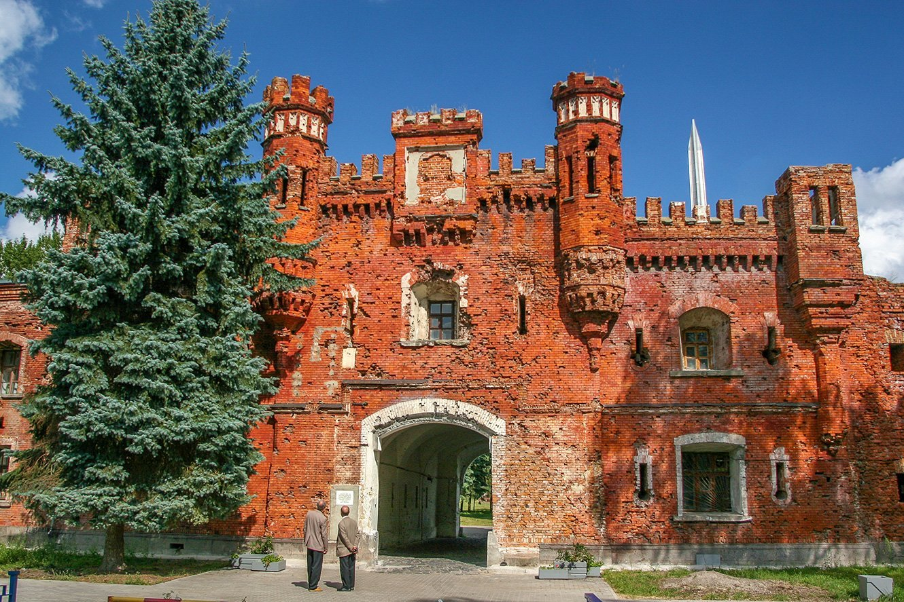
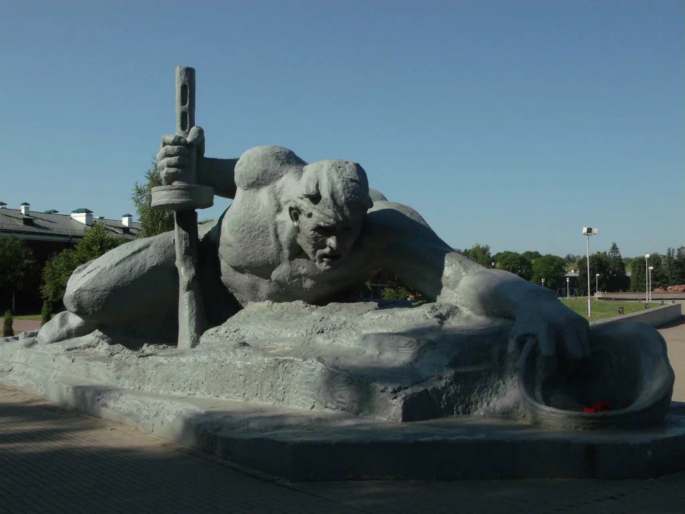

Национальная библиотека


Брестская крепость была построена в 30-е – начале 40-х годов XIX века у
пересечения рек Западный Буг и Мухавец на месте старого Бреста. Во время
строительства весь город был перемещен на новую территорию восточнее
цитадели. Крепость размещалась на 4 островах, образованных рукавами рек
Мухавец и Западный Буг и системой каналов.Архитектурный центр Цитадели –
гарнизонная Николаевская церковь, построенная в 1851–76 гг. Общая площадь
крепости составляет около 4 квадратных километров. С августа 1915 года и
до конца Первой мировой войны Брестская крепость была занята германскими
войсками. В 1921 году по условиям Рижского мирного договора отошла к
Польше, в составе которой находилась до 1939 года. В 1939 г. Брестская
крепость была передана Советскому Союзу.22 июня 1941 года гарнизон
крепости принял первые удары немецко-фашистских захватчиков и более месяца
держал оборону в полном окружении. В послевоенное время за мужество и
героизм, проявленные защитниками крепости во время ее обороны, цитадель
получила почетное звание "Крепость-герой". Для народа Беларуси Брестская
крепость является выдающимся символом сопротивления во время Великой
Отечественной войны.Брестская крепость является одним из тех мест, которые
следует посетить в Беларуси, и самой крупной туристической
достопримечательностью в городе Бресте. После войны крепость не была
полностью восстановлена. На ее территории для увековечения подвига
защитников в 1969–71 годах создан мемориальный комплекс.
Архитектурно-скульптурный ансамбль мемориала включает в себя главный
монумент "Мужество", штык-обелиск, скульптурную композицию "Жажда",
площадь Церемониалов, 3 ряда мемориальных плит с захоронениями погибших,
руины и уцелевшие сооружения крепости, музей.Мемориал начинается с
монументального главного входа в виде огромной звезды, прорезанной в
бетонном блоке. Здесь звучит песня А.Александрова "Священная война" и
правительственное сообщение о нападении на Советский Союз войск
немецко-фашистской Германии. Композиционный центр ансамбля – монумент
"Мужество", погрудная скульптура воина высотой 33,5 м, на обратной стороне
которой расположены рельефные композиции, рассказывающие об отдельных
эпизодах героической обороны крепости. 100-метровый обелиск "Штык" виден
из любой точки крепости и связан с основным монументом "Мужество" 3 рядами
надгробных плит. Известны имена только 216 из 850 захороненных здесь
защитников крепости.Скульптурная композиция "Жажда" изображает советского
солдата, который, опираясь на автомат, из последних сил пытается
дотянуться до реки и зачерпнуть каской воды. Памятник посвящен мужеству
защитников крепости, которые без еды и питья на протяжении многих дней
держали оборону. Основной частью мемориала является площадь Церемониалов,
где проходят массовые торжества. Перед руинами бывшего инженерного
управления горит Вечный огонь. В вечернее время на территории крепости
включается декоративная подсветка.